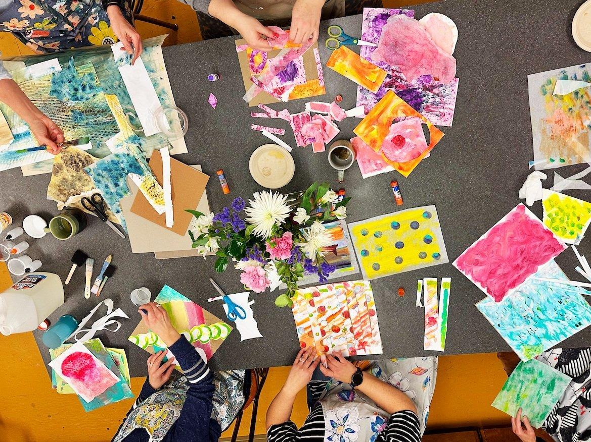
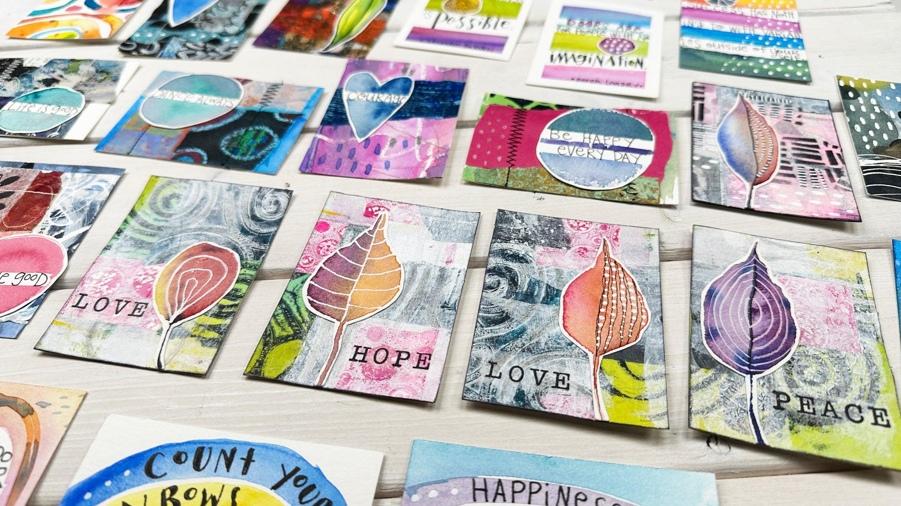
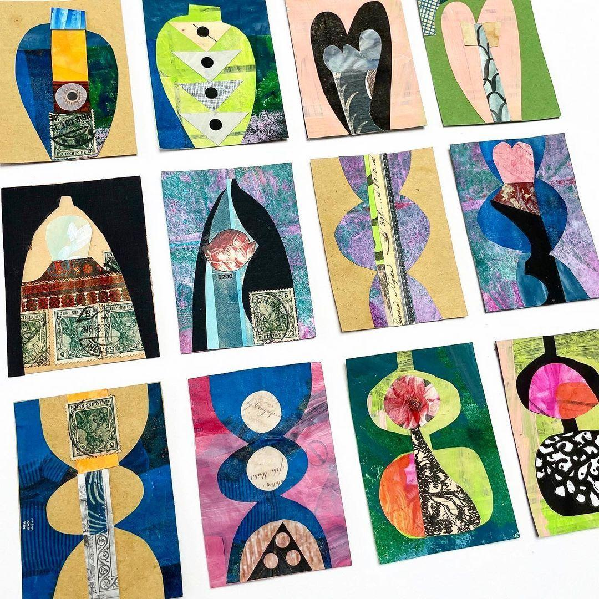
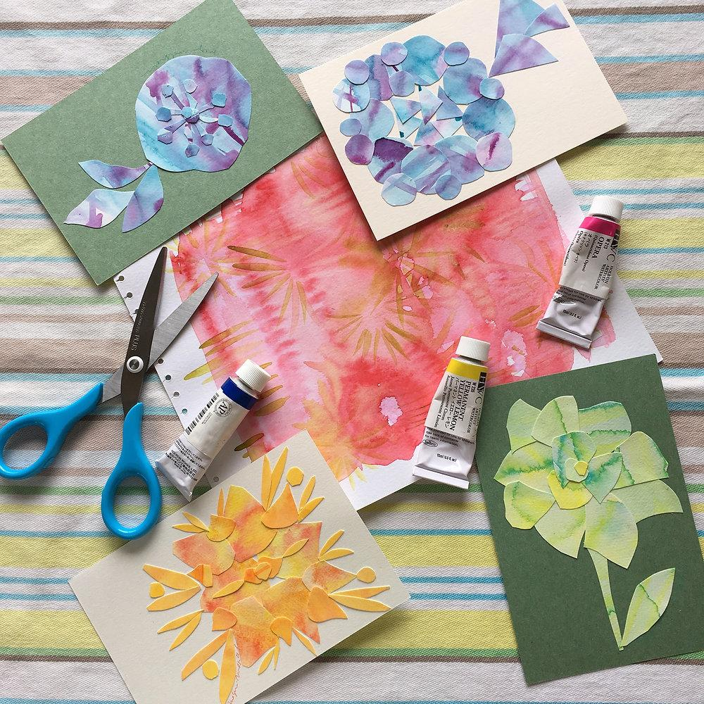
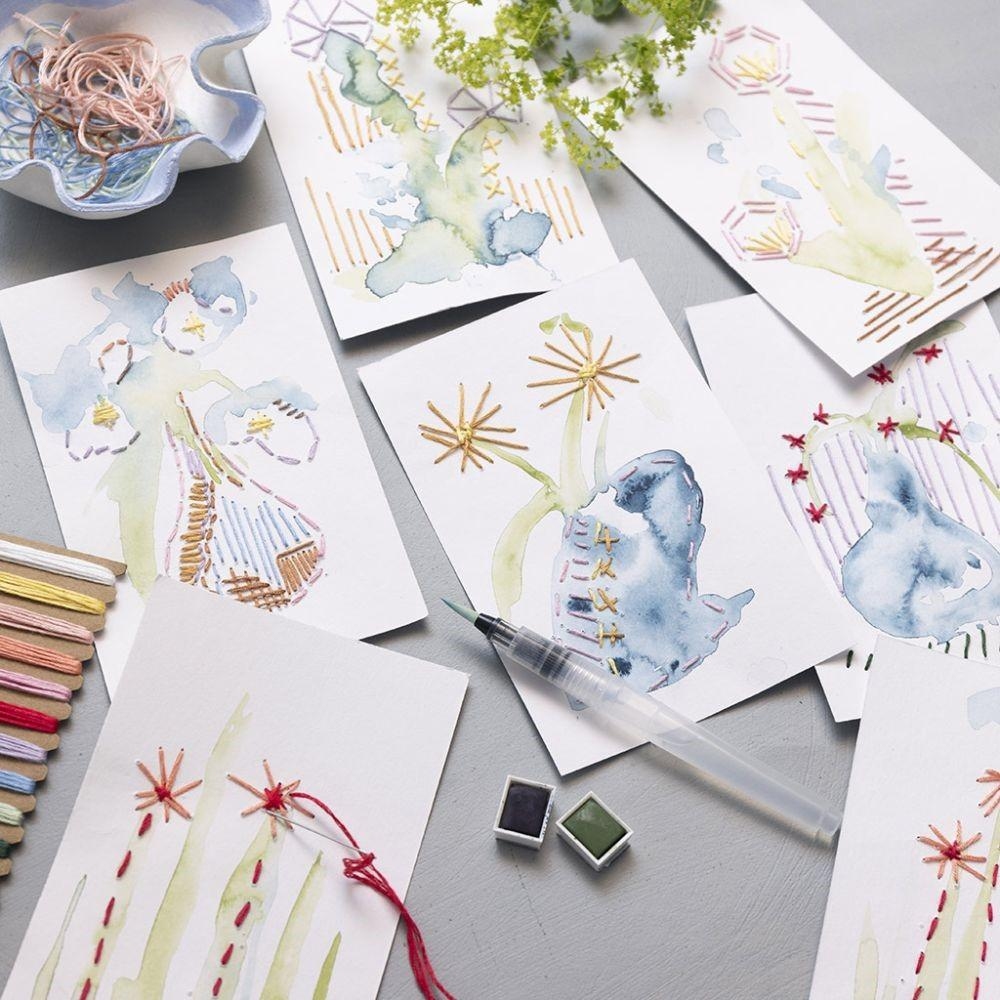

Моё место в собственной жизни
О себе, своих желаниях, границах и праве выбирать.
Иногда жизнь постепенно наполняется обязанностями, ожиданиями и заботой о других. Здесь можно исследовать, чему в ней находится место сейчас — и чему хотелось бы дать больше пространства.
Все группы и встречи
Ведущая: Анна Анопова — посмотреть профиль специалиста
Что мы будем делать
Работать с коллажем, живописью, фактурами, объёмными композициями и личными метафорическими картами. Уметь рисовать не нужно. Необязательно делиться личным опытом вслух: каждый выбирает комфортную степень участия.
Программа восьми встреч
Где я сейчас?
Интуитивный коллаж «Моя жизнь сегодня».
Роли, которые я выбираю. Роли, в которых остаюсь
Пространственная композиция «Мои роли».
Чувства, которым не хватает места
Экспериментальная живопись «Цвет моего состояния».
Где заканчивается чужое и начинается моё?
Художественный объект «Моё пространство».
Образы, в которых я узнаю себя
Серия личных метафорических карт в смешанной технике.
Чего я хочу?
Объёмный коллаж «Формы моих желаний».
На что я могу опереться?
Трёхмерный объект «Моя опора».
Моё место в собственной жизни
Авторская книга «Моя жизнь. Продолжение».
Образы и материалы
Примеры художественных техник и личных карт. Это не шаблоны: у каждого участника рождаются собственные образы.




Формат участия
Предлагается цикл из восьми встреч по два часа для небольшой группы взрослых.